HTLTC-R: Graphics
graphics.RmdUsing this document
- Code blocks and R code have a grey background (note, code nested in the text is not highlighted in the pdf version of this document but is a different font).
- # indicates a comment, and anything after a comment will not be evaluated in R
- The comments beginning with ## under the code in the grey code boxes are the output from the code directly above; any comments added by us will start with a single #
- While you can copy and paste code into R, you will learn faster if you type out the commands yourself.
- Read through the document after class. This is meant to be a reference, and ideally, you should be able to understand every line of code. If there is something you do not understand please email us with questions or ask in the following class (you’re probably not the only one with the same question!).
Goals
- Understand the basics of the graphics system
- Know the different plotting regions
- Know the different coordinate systems
- Learn the basic graphics tools to draw & annotate custom plots
The R graphics system
R has two engines for graphing: the graphics engine and the grid engine. The grid engine is arguably more flexible, but also more complicated. In this class we will only discuss the graphics engine. Before we start discussing the details of the engine, we will illustrate some of the basic plotting functionality. The most common starting for a plot is calling the plot function. This function is essentially a wrapper for MANY functions that give you an easy way to make a very basic plot.
plot(0)
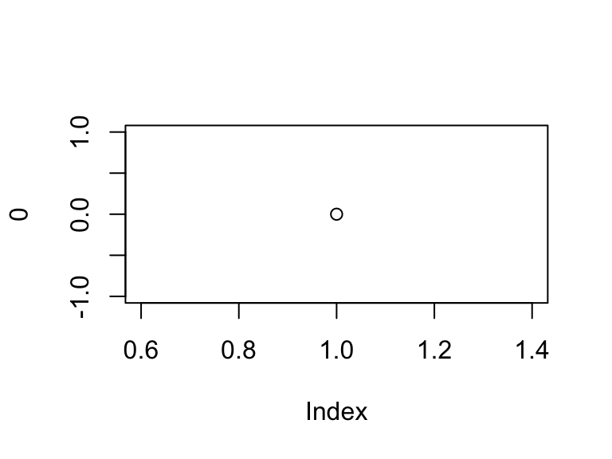
The plot function will take many data types and structures, and will produce different plots based on the input.
plot(matrix(1:10, ncol = 2)) # scatterplot # boxplot plot(data.frame(rep(letters[1:5], each = 2), 1:10, stringsAsFactors = TRUE))
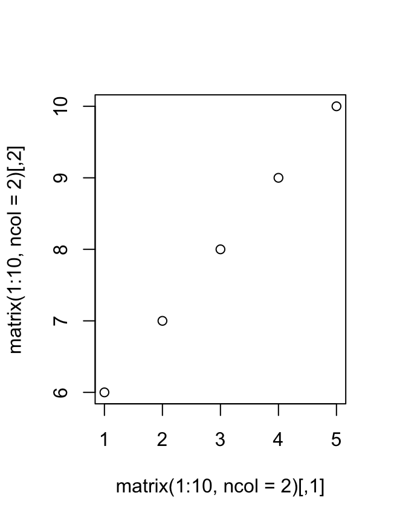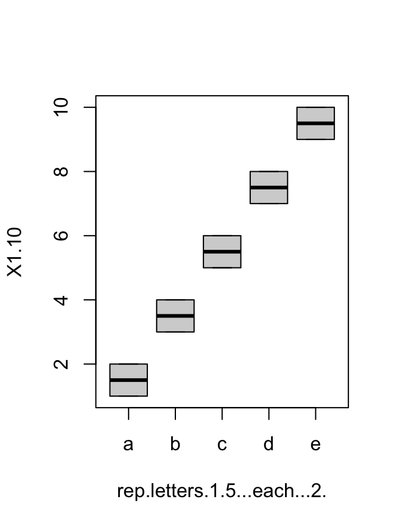
There are many guides on how to change the parameters of plot, as well as other high-level functions like barplot, boxplot, hist, etc. A good first step is to read through ?plot. Rather than belabor lists of arguments, we will discuss the fundamentals of the grahics system.
Plotting devices
Both the graphics and the grid system start with the generation of a plotting device. The creation and management of devices are controlled by the dev.* functions. In addition to the dev.* functions there are many special device functions (pdf, png, etc.) that open a device and write directly to a file. Note: when using one of the special graphics drivers none of the graphics are shown until the device is closed and the generated file is opened. Using these device calls will allow generating high-quality manuscript-ready figures. At any time we can look at the open devices using dev.list() and dev.cur().
# We start with no open devices dev.list() ## NULL dev.cur() # lists the active device, here null because no device open ## null device ## 1 pdf(tempfile()) # open a new pdf device dev.list() # 1 is not shown, but always represents the null device ## pdf ## 2 dev.cur() ## pdf ## 2 pdf(tempfile()) dev.list() ## pdf pdf ## 2 3 dev.cur() ## pdf ## 3 dev.set(2) ## pdf ## 2 dev.cur() ## pdf ## 2 dev.off(2); dev.off(3) ## pdf ## 3 ## null device ## 1
With the exception of dev.list, the value returned by the dev. functions is the current device after the function call. We can see opening and closing devices change the current device.
Drawing regions
The next step in the process is to define the drawing regions. The drawing regions are set by calling plot.new(). plot.new() establishes the drawing regions in the device based on the current settings of par(). The par() function stores the current plotting parameters. Reading ?par is incredibly valuable. Here, we will only go over a select number of the plotting parameters. Running par() returns a named list with one element per parameter.
length(par()) # There are MANY parameters ## [1] 72 # Easiest to call the parameter of interest by name, here we are just # telling R to subset the returned list with the `$` operator. par()$mar ## [1] 5.1 4.1 4.1 2.1 # The values for parameters can be changed by setting them within the # function. par(mar = c(1, 1, 1, 1)) par()$mar ## [1] 1 1 1 1
par() controls everything from default colors and plotting symbols to the style of the default axes. It is important to understand that everytime a new device is created par() is reset to the defaults. Here we are interested in the drawing regions and how to define them. The figure below illustrates the three regions.
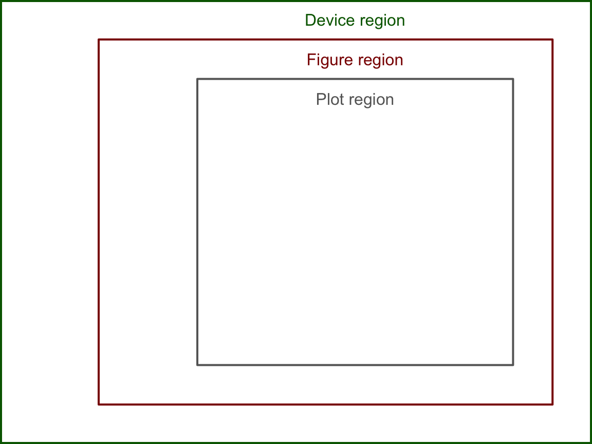
The device region is simply the device we are plotting in – controlled by the size of the device. The device region is also known as the “outer” region. The figure and plotting regions are defined relative to the size of the device. The size interactive devices – like the one built into RStudio – can be changed. The size of static devices (like the device created by pdf()) are defined when the device is created (eg. the width and height parameters in pdf). The figure and plotting regions are defined by the oma and mar settings in par(). oma stands for “outter margins” – meaning the number of lines of text between the figure region and the edge of the device. mar stands for “margins” – meaning the number of lines of text between the plotting region and the edge of the figure region. Each setting takes a numeric vector of the format c(bottom, left, top, right). There is another drawing region not shown above called the “inner” region, which will be addressed during the discussion about organizing multiple plots in one device (below). The above figure was created by setting both oma and mar to c(2, 5, 2, 2).
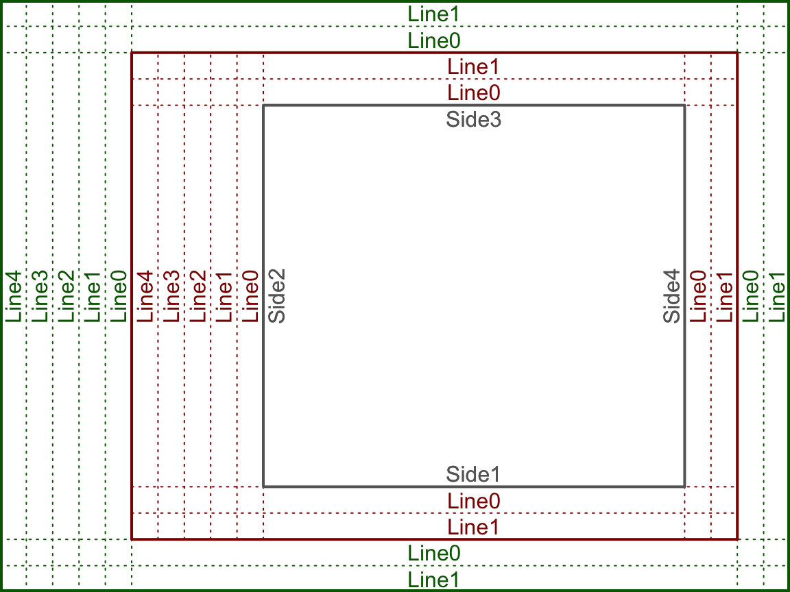
The above plot is key in understanding how to draw things within the graphics engine. Many of the drawing functions rely on specifying the side, line, and whether to draw in the outer margins. Notice the “0” line rests on the interior drawing region, eg. the inner line 0 rests on the plotting region and the outer line 0 rests on the figure region. Here the text is drawn such that it is justfied above the line.
By default, par()$oma = c(0, 0, 0, 0) – meaning that R does not typically include any outer margins and the figure region fills the whole device. We can think of the plotting region as the space where the data goes, and the figure margin space as where we draw the axes, axis labels, title, etc. When using the high-level plotting functions, such as plot, R will define the scale of the plotting region based on the supplied data. Here the scale means what values fit into the x and y axes, eg. x ranges from 0 to 100 and y ranges from 5 to 6. Only data within the scale of the plotting region will be included (unless we tell R otherwise – more on that later). The scale of the plotting region is stored by usr. Now we will go through the first couple steps of constructing a plot from scratch, tracking how each step effects par()$usr.
# usr is c(x-min, x-max, y-min, y-max) par()$usr # c(0, 1, 0, 1) by default ## [1] 0 1 0 1 plot.new() # setup a new plot par()$usr ## [1] -0.04 1.04 -0.04 1.04 plot.window(xlim = c(0, 100), ylim = c(5, 6)) par()$usr ## [1] -4.00 104.00 4.96 6.04 # Note the default margins par()$mar ## [1] 5.1 4.1 4.1 2.1 labelLines(alpha = 0.5) # custom function for illustration (ignore)
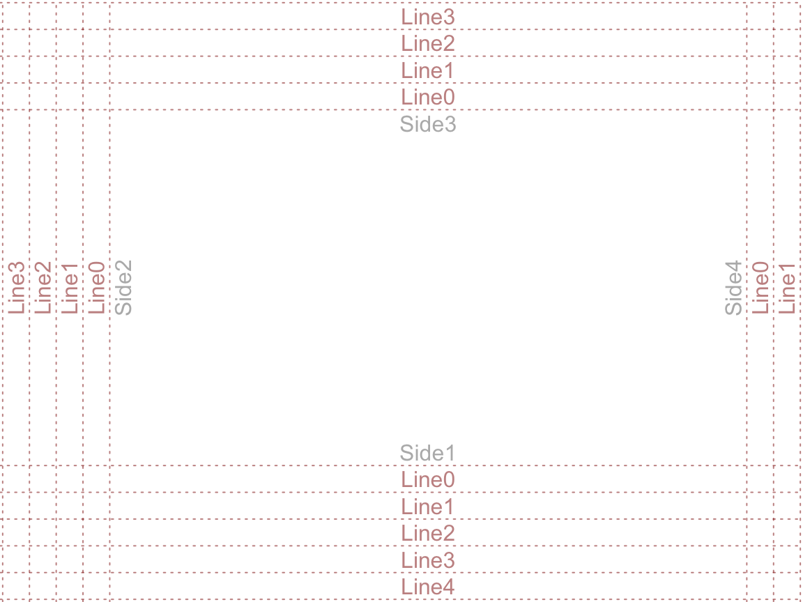
First note you do not need to call a new device manually, plot.new will handle that for you. Second, note that plot.window behaves differently than setting usr directly with par. Using plot.window adds 4% to the given range (the default behavior). When using plot, R finds the range of the given data and adds 4%. Here we can see the span of 5 and 6 is 1, so 0.04 is added and subtracted giving the final usr values.
Drawing in graphics
Now that we have the ability to call a new device define the drawing regions, we will discuss how to draw the plot elements in the device. Both the graphics and grid engines use follow a paint-like system for drawing. Each addition to the device is “painted” on, meaning that the first of overlapping drawings will be covered by subsequent drawings. The following code illustrates this.
plot.new() par(mar = rep(0, 4), usr = c(0, 3, 0, 2)) polygon(x = c(0.9, 0.9, 1.1, 1.1), y = c(0.9, 1.1, 1.1, 0.9), col = col2alpha("darkblue", 0.5), border = NA) polygon(x = c(0.6, 0.6, 1.4, 1.4), y = c(0.6, 1.4, 1.4, 0.6), col = col2alpha("darkred", 0.5), border = NA) polygon(x = c(0.9, 0.9, 1.1, 1.1) + 1, y = c(0.9, 1.1, 1.1, 0.9), col = "darkblue", border = NA) polygon(x = c(0.6, 0.6, 1.4, 1.4) + 1, y = c(0.6, 1.4, 1.4, 0.6), col = "darkred", border = NA)
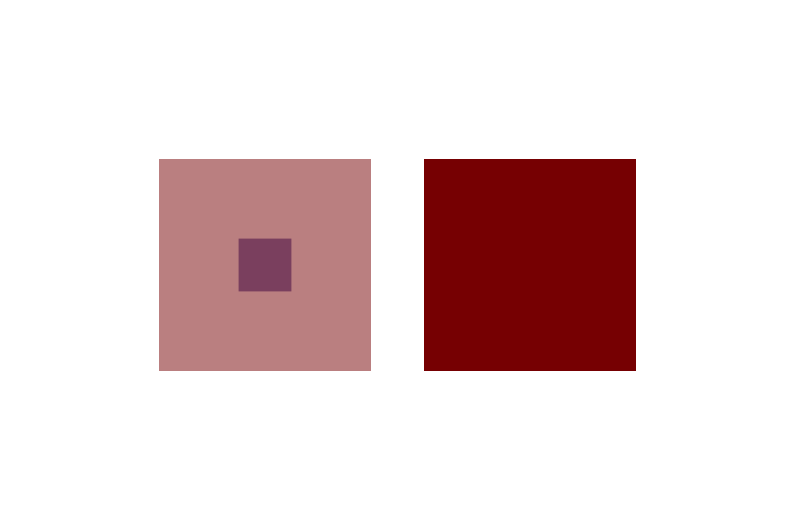
Here we use a custom function to make the colors transparent for the left squares, drawn by the function polygon. You can see R draws the blue square first, then the red square over the blue square. polygon works by drawing a polygon with vertices at the given x and y cooridnates. Note that polygon will complete the path to the starting point, ie. we did not need to add the starting point at the end of each vector. (We chose to use par to set the scale of the plotting region without margins, so that we could specify the device size – 6"x4" – such that the drawings were exactly square.)
We will now go through the functions needed to add the common plot elements, discussing how to customize each element. Consider the following plot:
x <- seq(0, 100, length.out = 10) y <- seq(5, 6, length.out = 10) plot.new() plot.window(xlim = c(0, 100), ylim = c(5, 6)) box() # Draws the outer frame axis(side = 1) # Draws the x-axis (recall the side definitions!) axis(side = 2) mtext(side = 1, "x-axis", line = 3) # Draws text in the margin mtext(side = 2, "y-axis", line = 3) title(main = "A plot to learn from") # Draws the title points(x = x, y = y) # Draw points on the plot legend(x = "topleft", legend = "Some data", pch = 1) # Finally, draw a legend
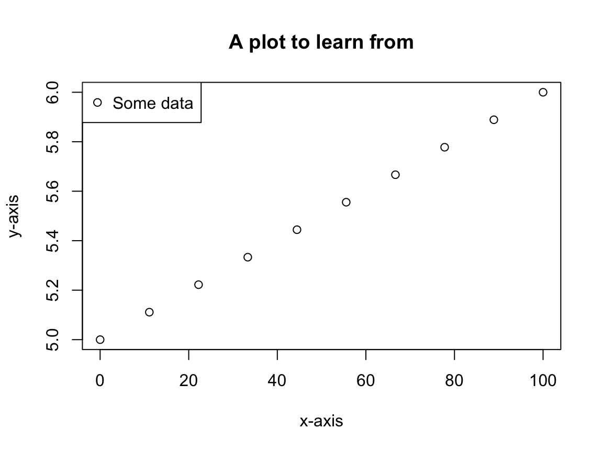
First note, the above plot (excluding the legend) can be created using the plot command:
plot(x = x, y = y, xlab = "x-axis", ylab = "y-axis", main = "A plot to learn from")
However, we want to understand the individual components so that we can easily customize the plot to prepare manuscript-ready figures without any manual manipulation.
Keep in mind there are many ways to skin a cat! We will use x and y as defined above and initiate each plot with plot(x = x, y = y, ann = FALSE, axes = FALSE, type = "n"). This is a shortcut to calling plot.new and then plot.window. The call to plot says plot this data with no annotations (axis labels or title), no axes, and with type “n” (meaning don’t draw the points, either). Note, the axes = FALSE also suppresses the plot frame. It saves a couple lines of code and does the dirty work of defining the scale of the plotting region for us. Best of all, it demonstrates another way to accomplish the same task. For each of the following sections we will discuss one aspect of the plot. For each function we encourage reading the help page.
Plot frame
To frame or not to frame? As mentioned above, setting axes = FALSE when calling plot suppresses the plotting frame. Some people like include a frame around the plot, others do not. When starting with a blank canvas the box function draws a frame around the plotting region.
par(oma = rep(1, 4)) plot(x = x, y = y, ann = FALSE, axes = FALSE, type = "n") box() # default, which = "plot" box(which = "figure", col = "red") box(which = "outer", col = "blue")
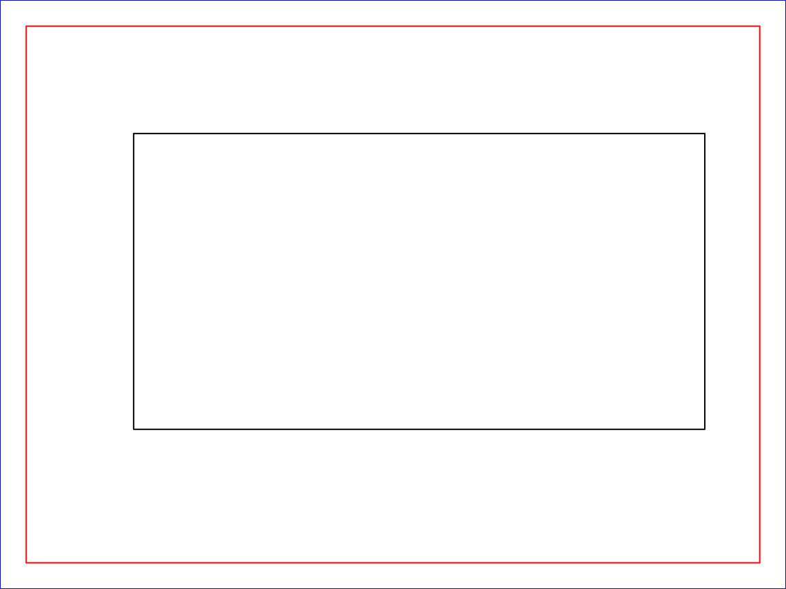
By default, box draws a frame around the figure region. Here we see it can also draw frames around the figure and device regions. Notice the blue line (device region) is half as thick as the others – this occurs because the line is drawn on the border, so half of the line is off the device. One way to remedy this is by changing the line thickness, controlled by the parameter lwd, eg. box(which = "outer", col = "blue", lwd = 2).
Axes
The default position of the axes is controlled by the mgp setting, which specifies the margin line location for the axis title, tick labels, and axis line, respectively. By default mgp is c(3, 1, 0). This gives some insight as to why the default margin sizes are c(5, 4, 4, 2) + 0.1. R leaves room for axes on the bottom and left sides (sides 1 and 2, respectively). There is additional room left on the bottom for a subtitle, and room left on the top for the title. We draw axes with the axis function, which allows you to override any of the defaults. Consider the following:
plot(x = x, y = y, ann = FALSE, axes = FALSE, type = "n") box() axis(side = 1, line = 1) axis(side = 2, line = 1)
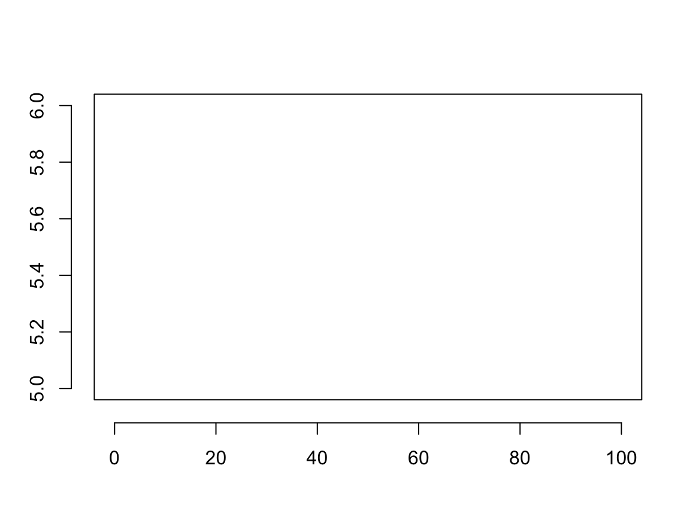
We used the line parameter to override the default axis location, drawing the axis at margin line 1 rather than 0. Suppose we want a plot where the x and y axes lay on the 0 lines rather than the edge of the plot. Here we need to use the pos parameter. We do not know which line represents the center of the plot, but pos takes values in the plotting region. Note, specifying pos overrides any specification of line.
plot(x = -5:5, y = -5:5, ann = FALSE, axes = FALSE, type = "n") axis(side = 1, pos = 0, line = 0) # this shows how pos overrides line axis(side = 2, pos = 0)
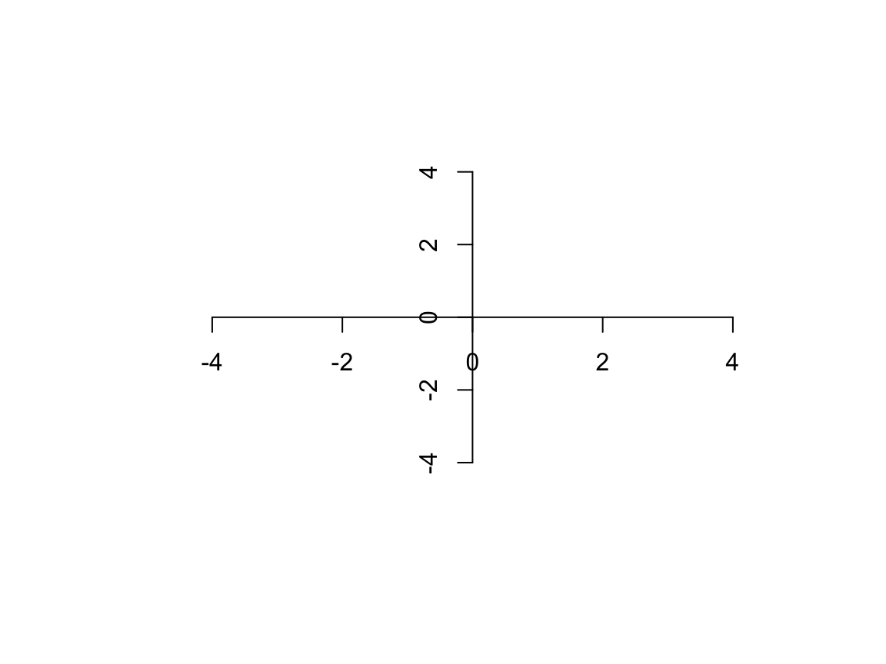
Now the axes are where we want, but the ticks and labels still need work.
par(mar = rep(0, 4)) plot(x = -5:5, y = -5:5, ann = FALSE, axes = FALSE, type = "n") loc <- c(-5:-1, 1:5) lbl <- c(-5, rep("", 8), 5) axis(side = 1, pos = 0, at = loc, labels = NA, tcl = 0.5) axis(side = 2, pos = 0, at = loc, labels = NA, tcl = 0.5) axis(side = 1, pos = 0, at = loc, cex.axis = 0.75, labels = lbl) axis(side = 2, pos = 0, at = loc, cex.axis = 0.75, labels = lbl, las = 2)
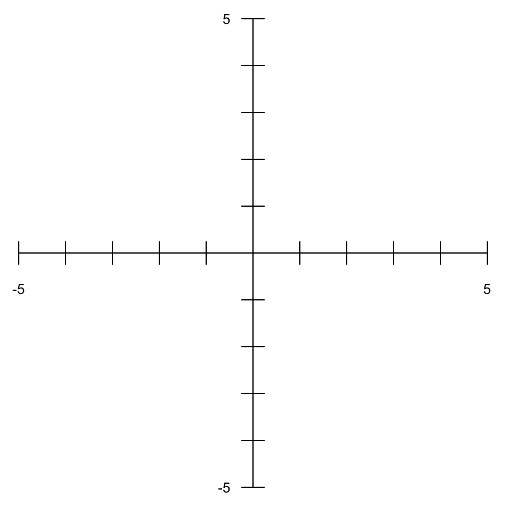
The axis function only draws tick marks on one side of the axis. The length of the tick marks is controlled by tcl, which specifies the length as a fraction of the height of a line of text. The default is -0.5, meaning draw a half-character height tick mark away from the plotting region. Here we used two calls to axis for each axis to create ticks that point in both directions. We also specified the tick locations with at and the tick labels with labels. The label sizes are controlled by cex.axis and the y-axis labels were rotated with las. Again, it is really helpful to read ?par to better understand each of these settings. cex controls text size, specifying how much the “plotting text and symbols should be magnified relative to the default”. Here, cex.axis is a special setting which only affects the axis label text.
Titles
Titles are most simply drawn with the title function.
par(mar = c(5, 4, 8, 2) + 0.1) # bty = "n" suppresses the frame; read ?par for more info! plot(x = x, y = y, ann = FALSE, bty = "n", type = "n") labelLines(alpha = 0.2) title(main = "Title w/\n2 lines", xlab = "x", ylab = "y", sub = "Sub title")
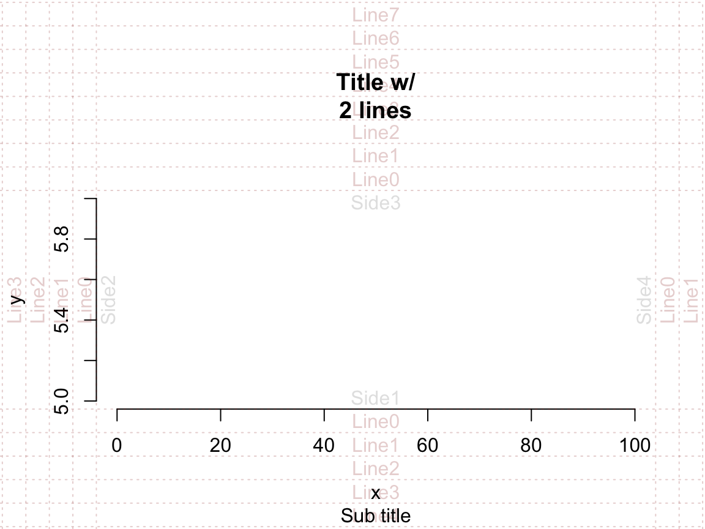
Notice in “A plot to learn from” we used mtext in place of title to draw the axis titles. We can think of title as making calls to mtext to specify the axis titles and the subtitle (although not technically true). Again, the location of the axis titles is controlled by mgp[1], and the location of the subtitle defaults to mgp[1] + 1 (which is why the default bottom margin has 1 more line than the default left margin!). We see the the position of the main title is centered in the top margin space. The main title can be moved to the outer margins by setting outer = TRUE.
Adding data
As with title and mtext, we can think of plot calling another function – points – to draw the data (again, technically not true, but useful to conceptualize the plotting).
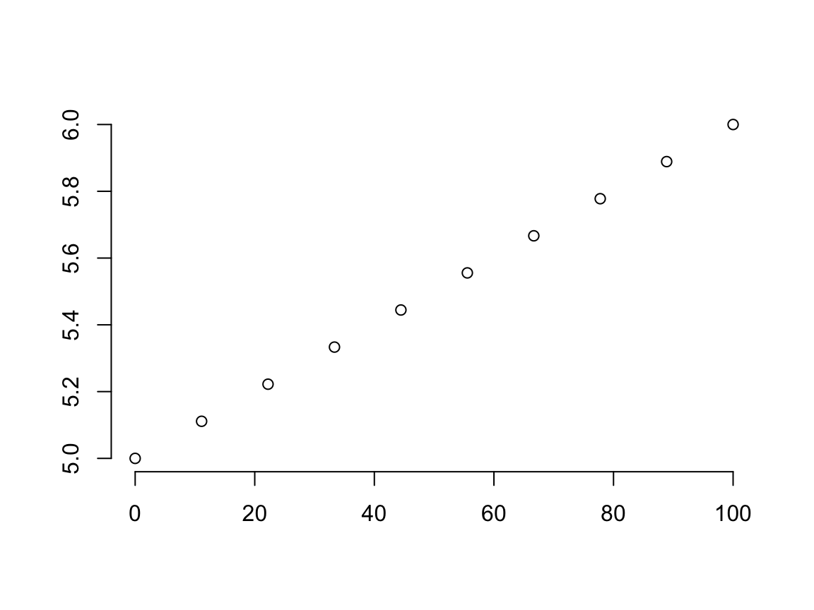
points adds plot symbols at the given coordinates. First, we will discuss the different point “types” specified by the type parameter. From the documentation, type is a:
1-character string giving the type of plot desired. The following values are possible, for details, see plot: “p” for points, “l” for lines, “b” for both points and lines, “c” for empty points joined by lines, “o” for overplotted points and lines, “s” and “S” for stair steps and “h” for histogram-like vertical lines. Finally, “n” does not produce any points or lines.
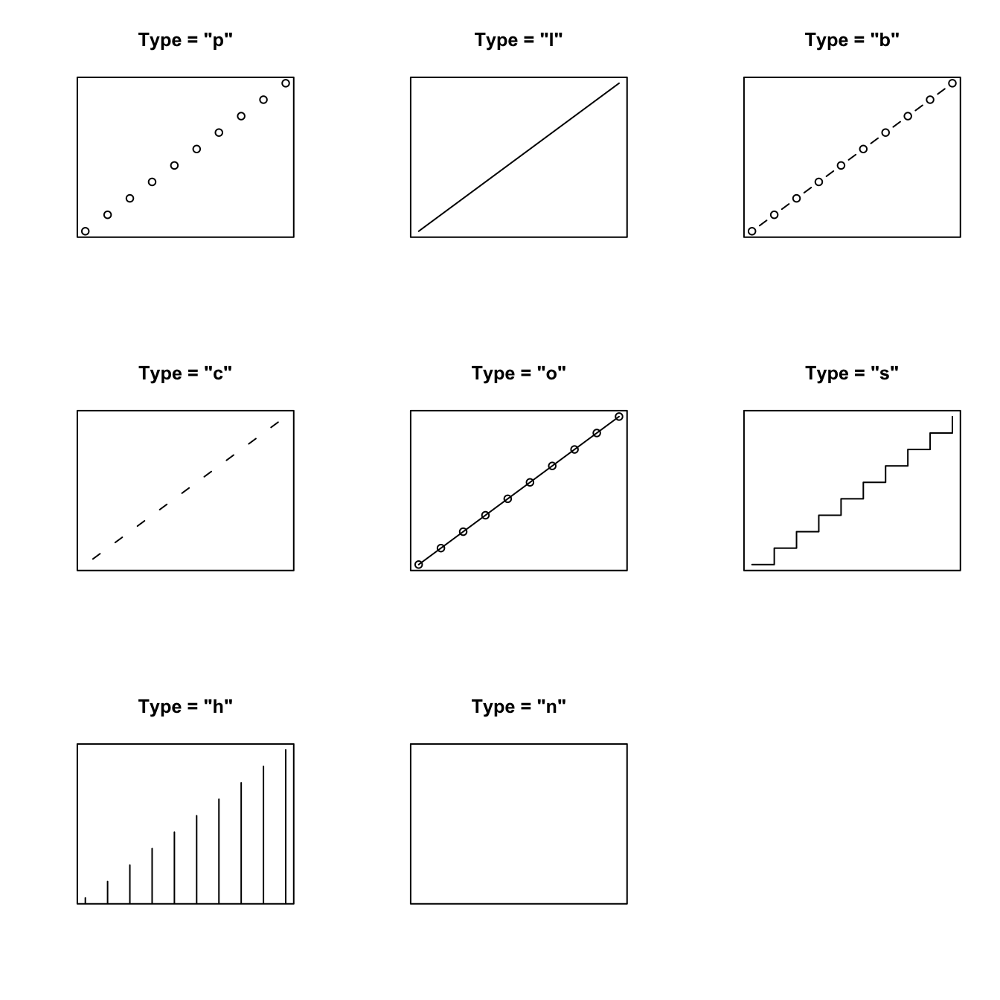
We can also customize the plotting symbols, their color, and size.
plot(x = x, y = y, ann = FALSE, bty = "n", type = "n") sz <- seq(0.5, 1.5, length.out = 10) points(x = x, y = y, col = "darkred", pch = letters[1:10], font = 2, cex = sz) points(x = x, y = y, col = "darkblue", type = "c", lwd = 2)
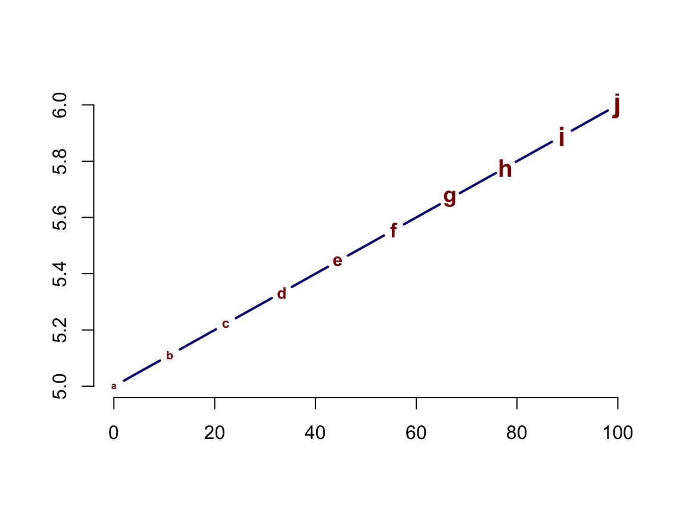
The above figure highlights a lot of new parameters. col defines the color, pch defines the plotting symbol (here we used letters), cex (as discussed above) defines the relative size of the symbols, and font = 2 tells the function to plot the bold version of the letters. type = "p" by default, so the first call to points just drew the red letters. The second call drew the blue lines (with double line thickness) between the symbols. Notice the parameters can take vectors, specifying different values for each point. There are many options for plotting symbols, which are summarized below1:
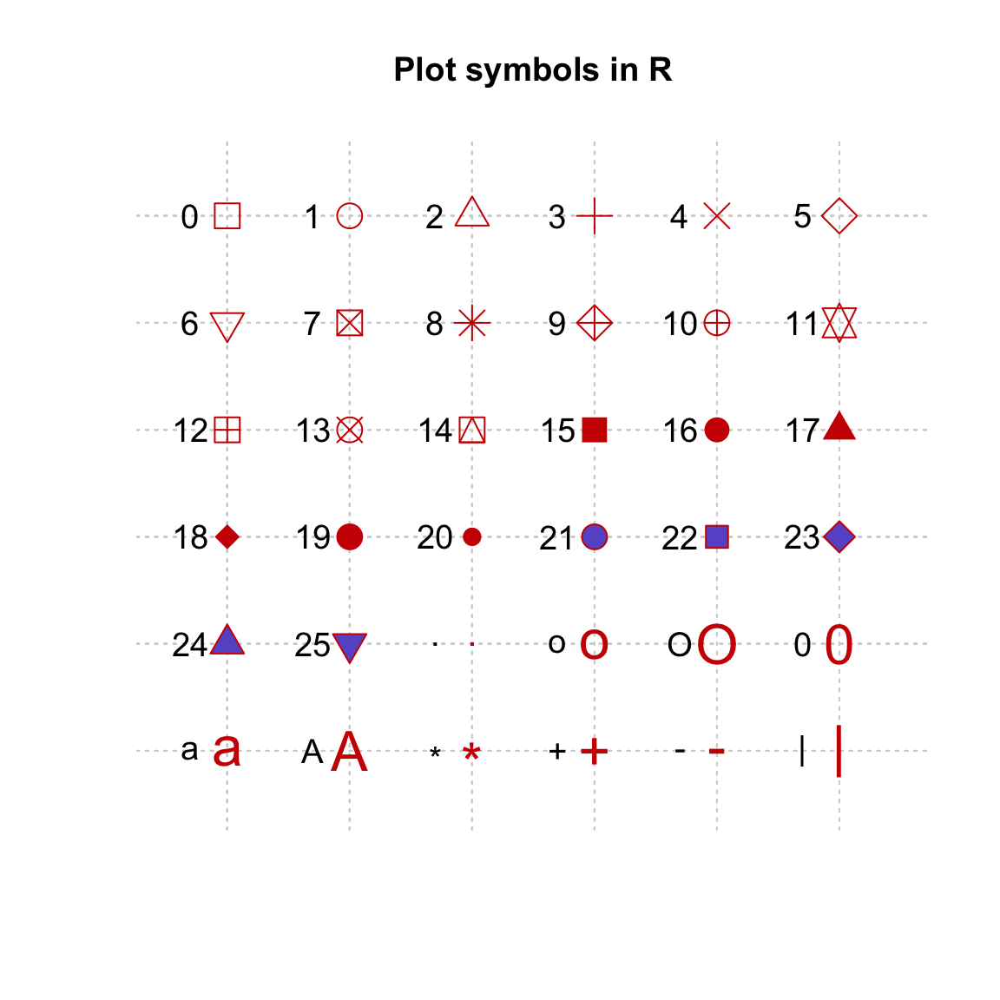
It also is important to note that drawing is generally clipped to the plotting region. The clippingi is controlled by par('xpd'). When xpd = FALSE (the default) all drawing is clipped to the plotting region; when xpd = TRUE all drawing is clipped to the figure region; when xpd = NA drawing is not clipped. Consider the following:
demoPlot <- function(xpd) { par(oma = rep(2, 4), mar = rep(2, 4)) plot.new() plot.window(xlim = c(3, 7), ylim = c(3, 7)) title(paste("xpd =", xpd)) box(col = "gray40") box(which = "inner", col = "darkred") box(which = "outer", col = "darkgreen", lwd = 2) points(1:10, 1:10, xpd = xpd, pch = as.character(1:10)) } demoPlot(FALSE) demoPlot(TRUE) demoPlot(NA)
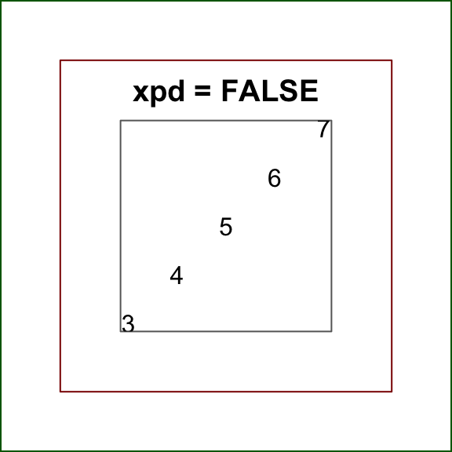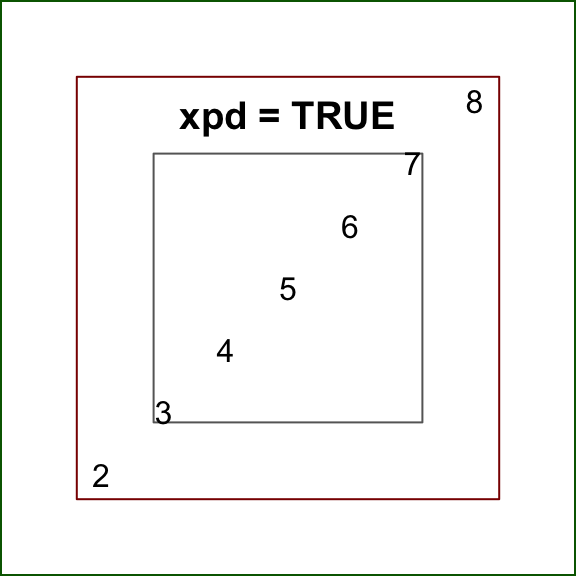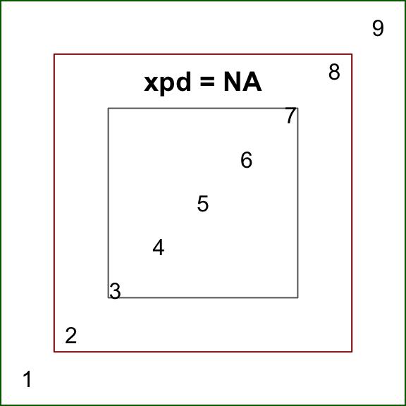
Note, there is also the clip() function for defining a custom clipping region.
Adding text
Text is drawn using the text function.
par(mar = rep(0, 4), pty = "s") plot(0:3, 0:3, type = "n", axes = FALSE, ann = FALSE) xpos <- c(1, 2, 1, 2) ypos <- c(2, 2, 1, 1) tstr <- c("this", "is", "adding", "text") points(xpos, ypos, pch = 3, col = "red", cex = 2) text(xpos, ypos, tstr)
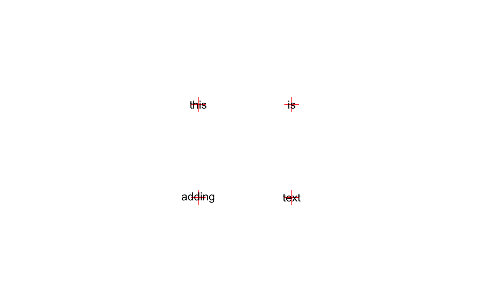
Notice the text is centered in for both x and y dimensions on the given point. We can change the position of the text, relative to the point, with the adj parameter (stored by par). When adj = 0.5 (the default) it means to center in both dimensions. However, we can give separate values for the x and y dimensions (c(x, y)). Both x and y can be given values [0, 1] where 0 means left/bottom jusified and 1 means right/top justified. Note: adj when set by par will also control the alignment of title and mtext.
par(mar = rep(0, 4), pty = "s") plot(0:3, 0:3, type = "n", axes = FALSE, ann = FALSE) points(xpos, ypos, pch = 3, col = "red", cex = 2) for (i in 1:length(xpos)) { adjX <- c(0, 0, 1, 1)[i] adjY <- c(0, 1, 0, 1)[i] text(xpos[i], ypos[i], tstr[i], adj = c(adjX, adjY)) }
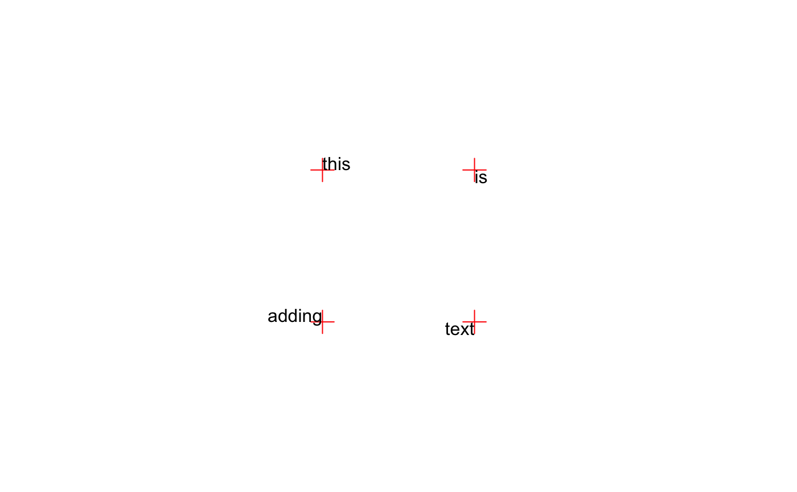
Text can be rotated by the srt parameter (also stored by par). srt accepts numeric values indicating the degrees of rotation from the anchor point for the text. When adj = 0.5 the anchor point is the center of the text. When adj = c(0, 1) the top-left corner of the “box” surrounding the text is the anchor point.
par(mar = rep(0, 4), pty = "s") plot(0:3, 0:3, type = "n", axes = FALSE, ann = FALSE) points(xpos, ypos, pch = 3, col = "red", cex = 2) for (i in 1:length(xpos)) { adjX <- c(0, 0, 1, 1)[i] adjY <- c(0, 1, 0, 1)[i] srt <- c(0, 45, 90, 135)[i] text(xpos[i], ypos[i], tstr[i], adj = c(adjX, adjY), srt = srt) }
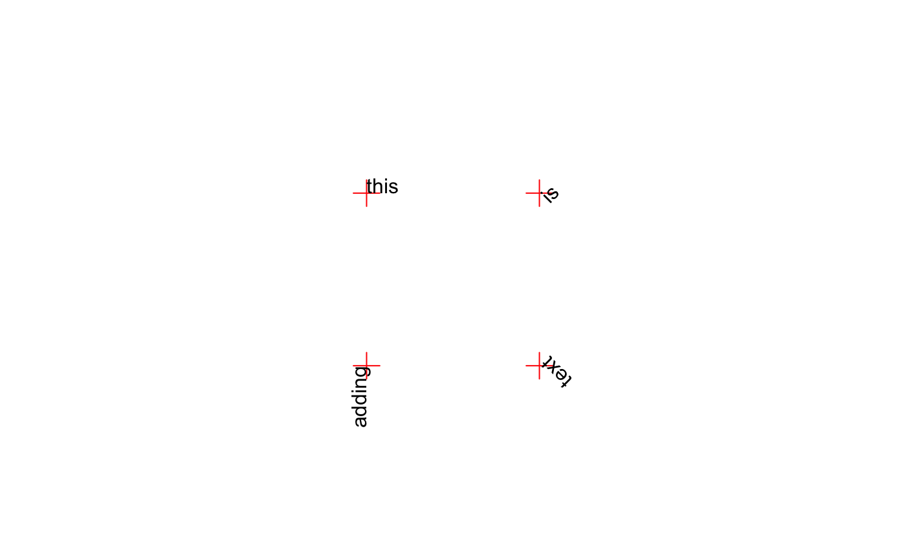
Finally, the font and family parameters control the type of letters (normal, bold, italic, bold & italic) and the font family (“serif”, “sans”, “mono”). The default value for family is "", which indicates to use the default family for the current device.
par(mar = rep(0, 4), pty = "s") plot.new() plot.window(xlim = c(0, 5), ylim = c(0, 4)) for (i in 1:3) { fam <- c("serif", "sans", "mono")[i] text(1:4, i, gsub("adding", fam, tstr), family = fam, font = 1:4) }
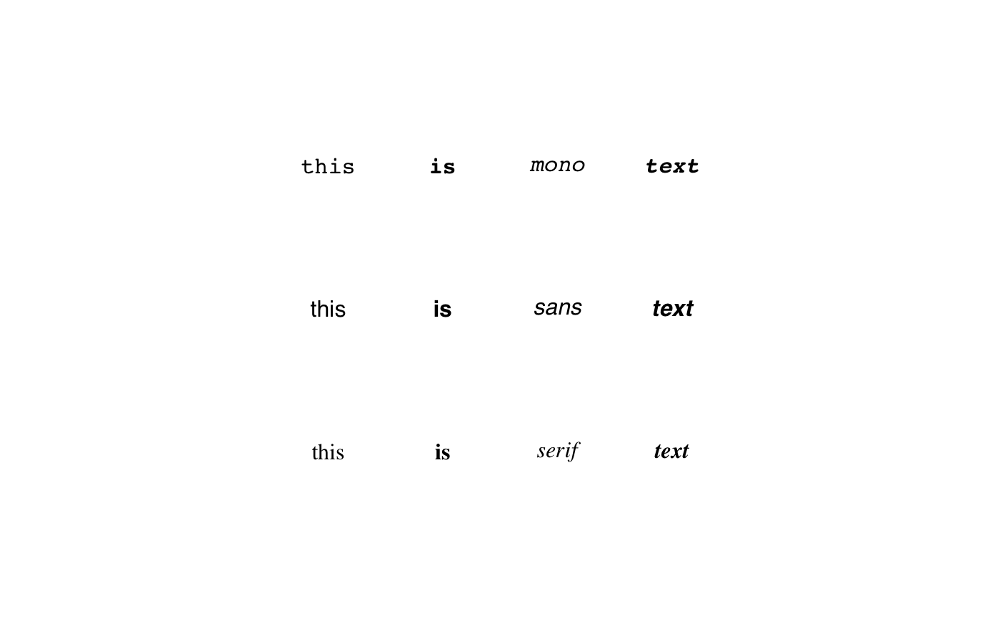
In addition to the text function, we can use the mtext function to easily label axes. mtext draws text outside the margins (without specifying xpd) based on the given side and margin line. Using the outer parameter, mtext will also draw text in the outer margins.
par(mar = c(2, 2, 1, 1), oma = c(1, 1, 2, 1)) plot(1:10, ann = FALSE, axes = FALSE, type = "s") box(col = "gray40", lwd = 2) box(which = "figure", col = "darkred", lwd = 2) box(which = "outer", col = "darkgreen", lwd = 4) mtext(text = "text for x axis", side = 1, line = 1) mtext(text = "text for y axis", side = 2, line = 1) mtext(text = "text for outer title", side = 3, line = 1, outer = TRUE)
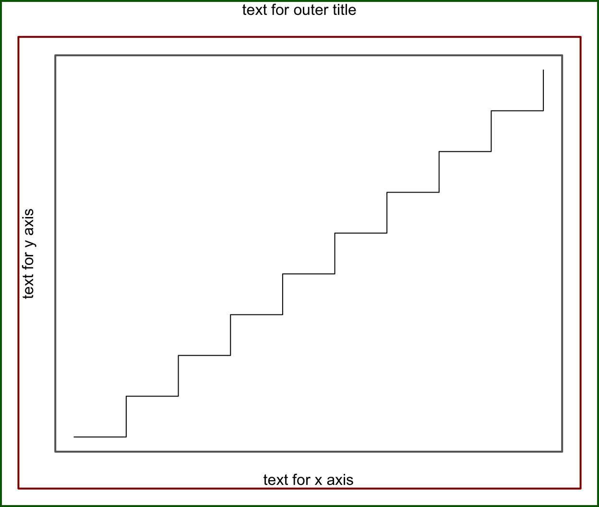
For scientific plotting, you should read ?plotmath which describes how to add special symbols and forumulae to your plots.
Legends
The legend() function draws a legend or key. Let’s take a look at a simple example using the iris dataset:
data(iris) irisScatter <- function() { plot(x = iris$Sepal.Length, y = iris$Petal.Length, col = match(iris$Species, c("setosa", "versicolor", "virginica")), pch = 16) } irisScatter() legend(x = 4.5, y = 7, legend = c("setosa", "versicolor", "virginica"), col = c(1:3), pch = 16) points(x = 4.5, y = 7, pch = 3, col = "red", cex = 3)

Notice the x and y coordinates are used to position the legend in the graph. By default, the given x and y coordinates specify the top left corner of the legend. The position of the legend can also be specified using the following keywords: “bottomright”, “bottom”, “bottomleft”, “left”, “topleft”, “top”, “topright”, “right” and “center”:
irisScatter() legend(x = "bottomright", legend = c("setosa", "versicolor", "virginica"), fill = c(1:3), border = "white", title = "Species", bty = "n")
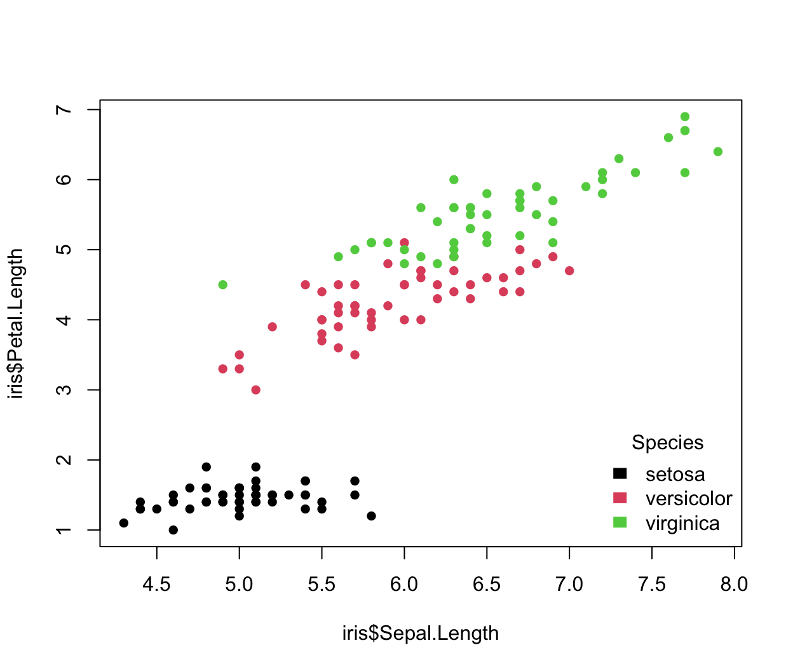
The fill argument indicates the colors to use for filling the legend boxes beside the legend text. border is the border color of the legend boxes, and is used only if fill is specified. title adds a title at the top of the legend. Similar to when calling plot, bty indicates the type of box to be drawn around the legend (above, none).
We generally only want to specify pch, fill, or lty arguments. However, combining pch and lty can provide desireable results:
y1 <- seq(1, 20, length.out = 10); y2 <- seq(5, 15, length.out = 10) plot(1:10, y1, type = "o", pch = 17, lty = "dashed", axes = FALSE, ann = FALSE) points(1:10, y2, type = "o", pch = 16, lty = "dotted") legend(x = 2, y = 15, xjust = 0.5, legend = c("y1", "y2"), lty = c("dashed", "dotted"), pch = c(17, 16), ncol = 2) points(2, 15, pch = 3, col = "red", cex = 3)
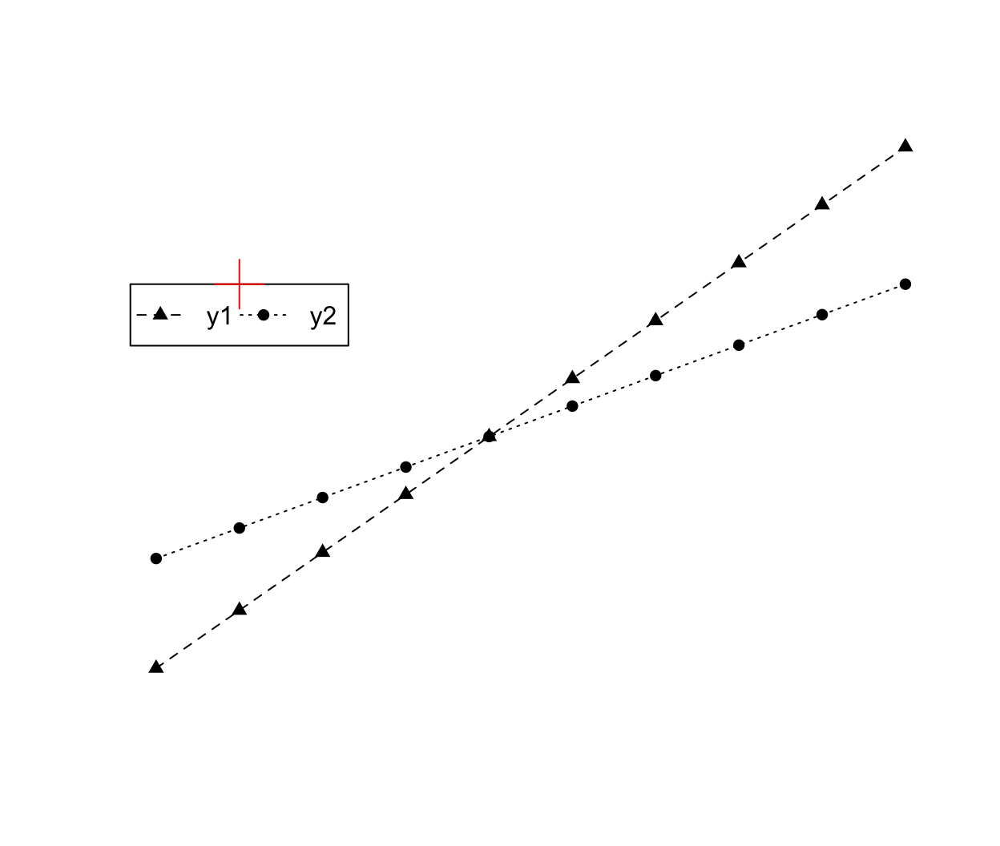
The ncol argument indicates the number of columns in the legend items (by default R uses 1, a vertical legend). Setting horiz = TRUE will also make a horizontal legend without explicitly defining the number of columns. Analagous to text alignment, the xjust and yjust arguments determine how the legend is justified relative to the legend x and y locations. A value of 0 means left justified, 0.5 means centered and 1 means right justified.
legend() returns a nested list describing the location and size of the legend. The first element, rect, contains four elements: (1) w indicating the legend width, (2) h indicating the legend height, (3) left the x coordiante of the left edge, and (4) top the y coordinate of the top edge. The second element, text, contains two elements: (1) x giving the x coordinates of the “anchor” point for the text (in the order given by legend), and (2) y giving the y coordinates of the “anchor” point for the text. Like when using text, the adj parameter will define the alignment for the legend text.
We can also add a legend outside of the graph by setting xpd = TRUE.
# Add extra space to right of plot area; change clipping to figure par(xpd = TRUE, mar = c(5.1, 4.1, 4.1, 8.1)) irisScatter() lgnd1 <- legend(x = "topright", legend = c("setosa", "versicolor", "virginica"), title = "Species", text.col = "transparent", box.lty = "dashed", box.lwd = 2, box.col = "blue", bg = "transparent") lgnd2 <- legend(x = "topright", legend = c("setosa", "versicolor", "virginica"), inset = c(-0.3, 0), col = 1:3, pch = 16, title = "lgnd2") lgnd3 <- legend(x = "topright", legend = c("setosa", "versicolor", "virginica"), inset = c(0.2, 0.4), col = 1:3, pch = 16, title = "lgnd3") arrows(x0 = lgnd1$rect$left, x1 = lgnd1$rect$left + diff(par('usr')[1:2])*0.3, y0 = lgnd1$rect$top, col = "blue", lwd = 2) arrows(x0 = lgnd1$rect$left, x1 = lgnd1$rect$left - diff(par('usr')[1:2])*0.2, y0 = lgnd1$rect$top, y1 = lgnd1$rect$top - diff(par('usr')[3:4])*0.4, col = "blue", lwd = 2)
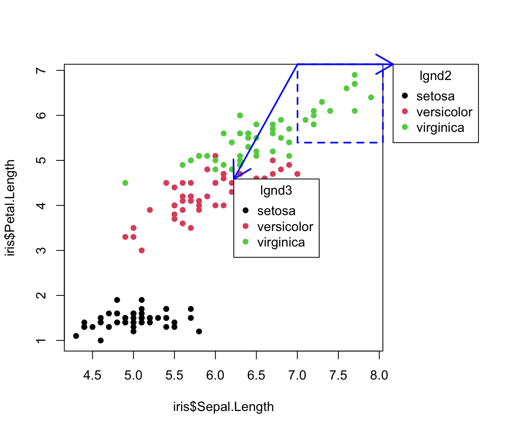
lgnd1$rect$left + diff(par('usr')[1:2])*0.3 ## [1] 8.168364 lgnd2 ## $rect ## $rect$w ## [1] 1.042036 ## ## $rect$h ## [1] 1.740984 ## ## $rect$left ## [1] 8.168364 ## ## $rect$top ## [1] 7.136 ## ## ## $text ## $text$x ## [1] 8.455654 8.455654 8.455654 ## ## $text$y ## [1] 6.439607 6.091410 5.743213
We could have also passed xpd = TRUE to legend and not changed the clipping for the whole figure. When specifying the legend location by keyword, inset defines how to position the legend with respect to the edge of the plotting region as a fraction of the plot region. Above, inset = c(-0.3, 0) says to position the legend to the right of the original x position by 0.3*(plot region width), given by diff(par('usr')[1:2])*0.3. The diff function just takes the difference of the given vector. Also notice the use of text.col, box.lty, and box.col in the first legend call above. As we might guess, these parameters define the text color, line type for the box, and color for the box, respectively. Also note, by default bg = "white", meaning the legend will cover data. In the first legend call, we maintained the data underneath by setting bg = "transparent". A complete list of parameters can be found in ?legend.
Other objects
The following gives a mostly complete list of other the functions for drawing in the graphics system.
| Function | Description |
|---|---|
lines |
Draw lines between the given coordinates |
polygon |
Draw polygon with vertices at the given coordinates |
abline |
Draw lines according to \(y = bx + a\) |
arrows |
Draw lines with arrow heads |
curve |
Draw the given expression |
segments |
Draw segments between the given pairs of points |
Colors
In this section, we will briefly talk about the color basics, and then introduce a couple of popular and useful color packages that generate sets of colors. First, we will explore the colors built into R. R recognizes 657 named colors which are returned by the colors() (or colours()) function.
head(colors()) ## [1] "white" "aliceblue" "antiquewhite" "antiquewhite1" ## [5] "antiquewhite2" "antiquewhite3" tail(colors()) ## [1] "yellow" "yellow1" "yellow2" "yellow3" "yellow4" ## [6] "yellowgreen"
Using the named colors is the easiest ways to specify a color in R. An excellent reference for color names: http://research.stowers.org/mcm/efg/R/Color/Chart/ColorChart.pdf
What about other ways to specify colors? In addition to the named colors, R accepts hexadecimal colors of the form “#RRGGBB” where each pair “RR”, “GG”, and “BB” consist of two hexadecimal digits giving a value in the range zero (00) to 255 (FF). The “RR”, “GG”, and “BB” refer to color intensity in the red, green, and blue channels, respectively. R provides two functions, (1) rgb() and (2) col2rgb() to work with the red-green-blue scale. By default, rgb returns the hexadecimal color based on the given red, green, and blue scales from 0 to 1. rgb will take values from 0 to 255 if we specify maxColorValue = 255. col2rgb takes either an integer or named color and returns the rgb values from 0 to 255. Unfortunately, these functions do not play nice together.
rgb(red = 255, green = 0, blue = 0, maxColorValue = 255) ## [1] "#FF0000" col2rgb("red") ## [,1] ## red 255 ## green 0 ## blue 0 col2rgb(2) ## [,1] ## red 223 ## green 83 ## blue 107 col2rgb(1:8) ## [,1] [,2] [,3] [,4] [,5] [,6] [,7] [,8] ## red 0 223 97 34 40 205 245 158 ## green 0 83 208 151 226 11 199 158 ## blue 0 107 79 230 229 188 16 158 rgb(t(col2rgb(1:8)), maxColorValue = 255) # rgb will take a matrix, but ## [1] "#000000" "#DF536B" "#61D04F" "#2297E6" "#28E2E5" "#CD0BBC" "#F5C710" ## [8] "#9E9E9E"
Notice that col2rgb returns an RGB by input matrix, but rgb requires an input by RGB matrix. The RGB color model corresponds to color generation on a computer screen rather than human color perception, and it is virtually impossible for humans to control the perceptual properties of a color in this color space. R also provides the hcl function to specify colors in the hue-chroma-luminance model, which can be more intuitive.
By default, R has a palette of colors, returned by the palette function. We can specify colors by integer, giving the index in the current palette. Note, these colors are repeated if the integer given is greater than the size of the palette. One final way to specify a color is to index an integer into a predefined set of colors using the palette() function:
palette() ## [1] "black" "#DF536B" "#61D04F" "#2297E6" "#28E2E5" "#CD0BBC" "#F5C710" ## [8] "gray62" par(mar = rep(0.5, 4)) barplot(rep(1, 8), col = 1:8, ann = FALSE, axes = FALSE)
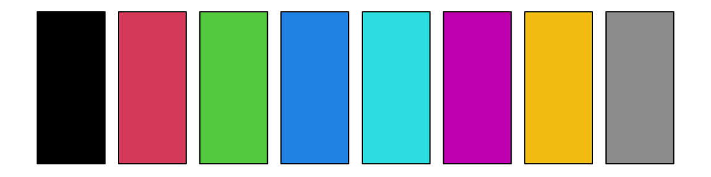
We can also change the palette using palette:
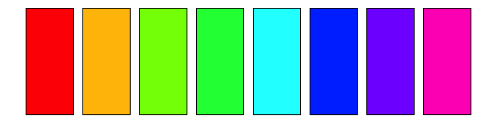
rainbow is a built in color ramping function. R has two types of color ramping functions: (1) a function that takes values between 0 and 1 and returns a matrix of RGB values, used less often and (2) a function that takes an integer, n, and returns n hexadecimal colors. rainbow is the second type. Below we see we can specify 100 colors, and rainbow will return 100 colors equally spaced along ROY-G-BIV.
palette(rainbow(100)) par(mar = rep(0.5, 4)) barplot(rep(1, 100), col = 1:100, ann = FALSE, axes = FALSE)
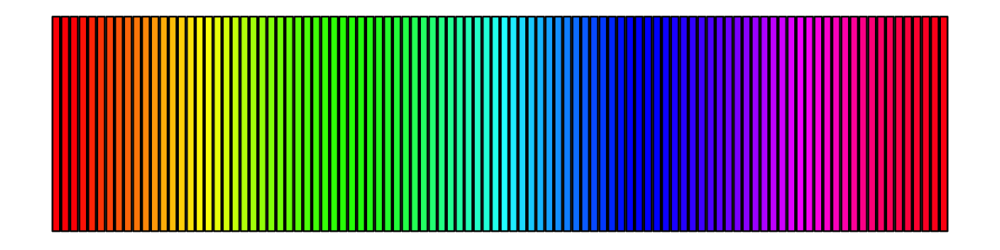
R provides two functions for creating custom palettes. For type (1) we can use colorRamp, and for type (2) we can use colorRampPalette. These functions return functions, that we will store and use. Here, we will create a blue-gray-red “diverging” palette.
cbrhPal <- colorRampPalette(c("blue3", "gray80", "red3"), bias = 0.5) palette(cbrhPal(30)) par(mar = rep(0.5, 4)) barplot(rep(1, 60), col = 1:60, ann = FALSE, axes = FALSE)
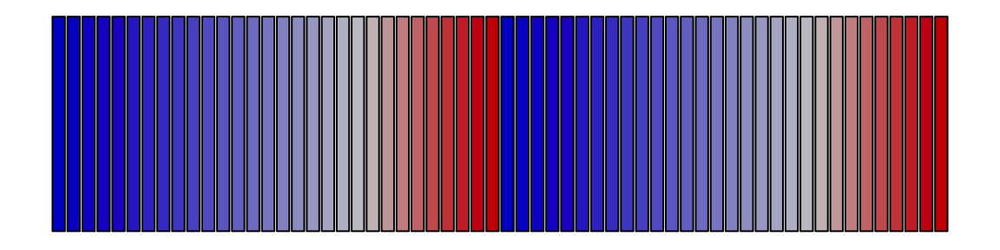
Note the bias parameter changes the palette center, which would be grey at the default bias value of 1. Also note, the palette will recycle when the integer values exceed the number of unique colors in the palette. Creating custom palettes can be daunting. We suggest using the RColorBrewer and colorspace packages, which both provide functionality for creating visually appealing and colorblind-safe palettes. More information about the packages is available as a supplemental vignette in this package called “palettes”.
We yield to Edward Tufte for some final thoughts on using color in visualizing data2.
The fundamental uses of color in information design (are): to label, to measure, to represent or imitate reality, to enliven or decorate.
Color spots against a light gray or muted field highlight and italicize data. Note the effectiveness and elegance of small spots of intense, saturated color for carrying information.
Use colors found in nature, especially those on the lighter side.
For encoding information, more than 20 or 30 colors frequently produce not diminishing but negative returns.
The primary colors (yellow, red, blue) and black provides maximum differentiation (no four colors differ more).
In color maps, use a single hue… Using a single hue with variations in intensity allows instant interpretation, multiple color maps without ambiguity, and leaves graphical space for layering and separation.
Organizing multiple plots
The graphics system provides three ways of organzing multiple plots in one device. The first way is the mfrow or mfcol parameter in par. The mfrow/mfcol parameters take a length two vector defining the number of rows and columns ([nrow, ncol]) to create a grid of plots.
par(mfrow = c(2, 2), oma = c(2, 3, 4, 1), mar = c(5, 4, 4, 2)) for (i in as.character(1:4)) { plot(x = 1, y = 1, ann = FALSE, axes = FALSE, pch = i, cex = 3) box(which = "figure", lwd = 2, col = "darkred") box(lwd = 2, col = "gray40") labelLines(alpha = 0.5) } box(which = "inner", lwd = 2, col = "darkblue") box(which = "outer", lwd = 4, col = "darkgreen") labelLines(outer = TRUE, alpha = 0.5)
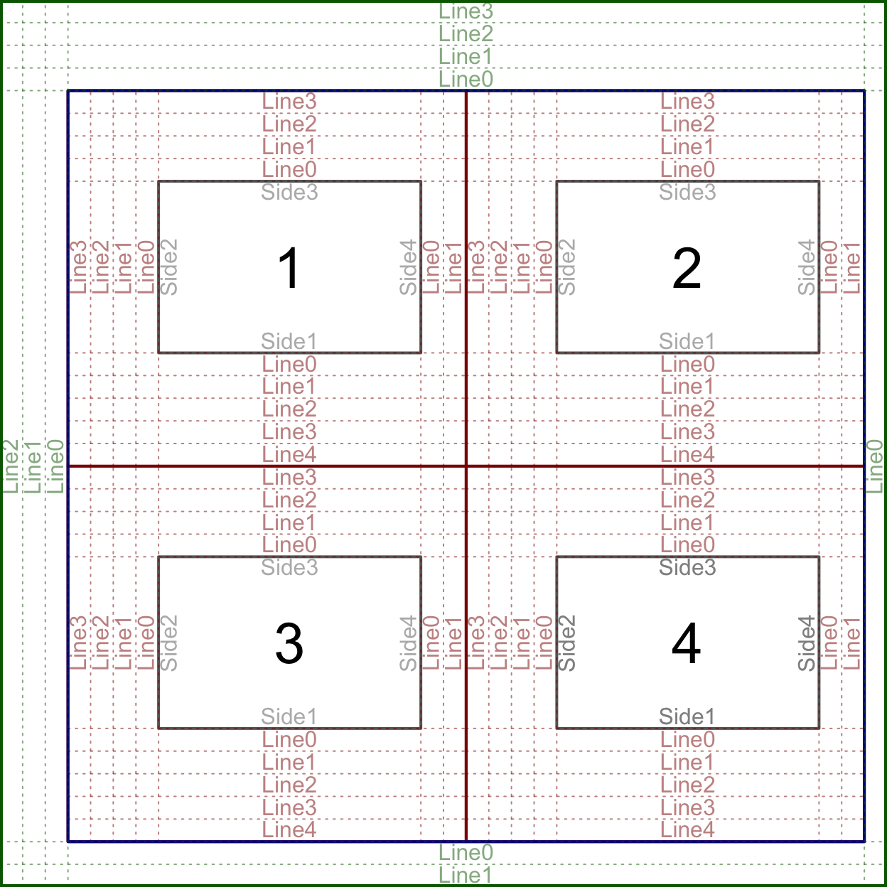
Rerun the above chunk changing mfrow = c(2, 2) to mfcol = c(2, 2) to note the difference. Note the use of “inner”. The “inner” region is drawing region defined by the sum of the figure regions (or NOT the outer region). The inner region will equal the figure region when there is only one plot in a device.
The second way to organize multiple plots in the graphics engine is the layout function. layout takes a matrix of integers specifying the plot to occupy the cell in the matrix. It also allows users to specify the heights and widths of the rows and columns. For example:
layout(mat = matrix(c(1, 2, 1, 3), ncol = 2), heights = 2:1, widths = 2:1) for (i in as.character(1:3)) { plot(x = 1, y = 1, ann = FALSE, axes = FALSE, pch = i, cex = 3) box(which = "figure", lwd = 2, col = "darkred") box(lwd = 2, col = "gray40") labelLines(alpha = 0.5) }
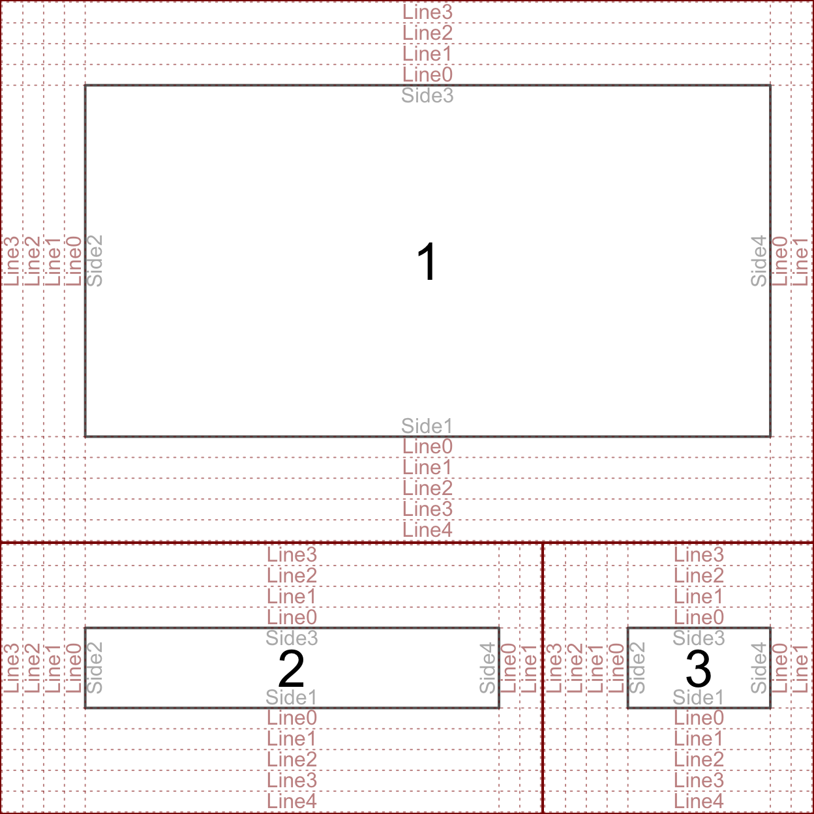
Finally, consider how layout can be used to overlay plots. (However, when constructing complicated overlaying plots it would be best to use the grid engine that is not discussed in this course.)
layout(mat = matrix(c(2, 2, 1, 2), ncol = 2), heights = 1:2) par(mar = rep(0, 4)) # First plot plot(x = 1, y = 1, ann = FALSE, axes = FALSE, pch = "1", cex = 3) box(lwd = 24, col = "red2") # Second plot plot(x = 1, y = 1, ann = FALSE, axes = FALSE) abline(0, 1, lwd = 40, col = "blue") points(1, 1, pch = "2", cex = 3, col = "white")
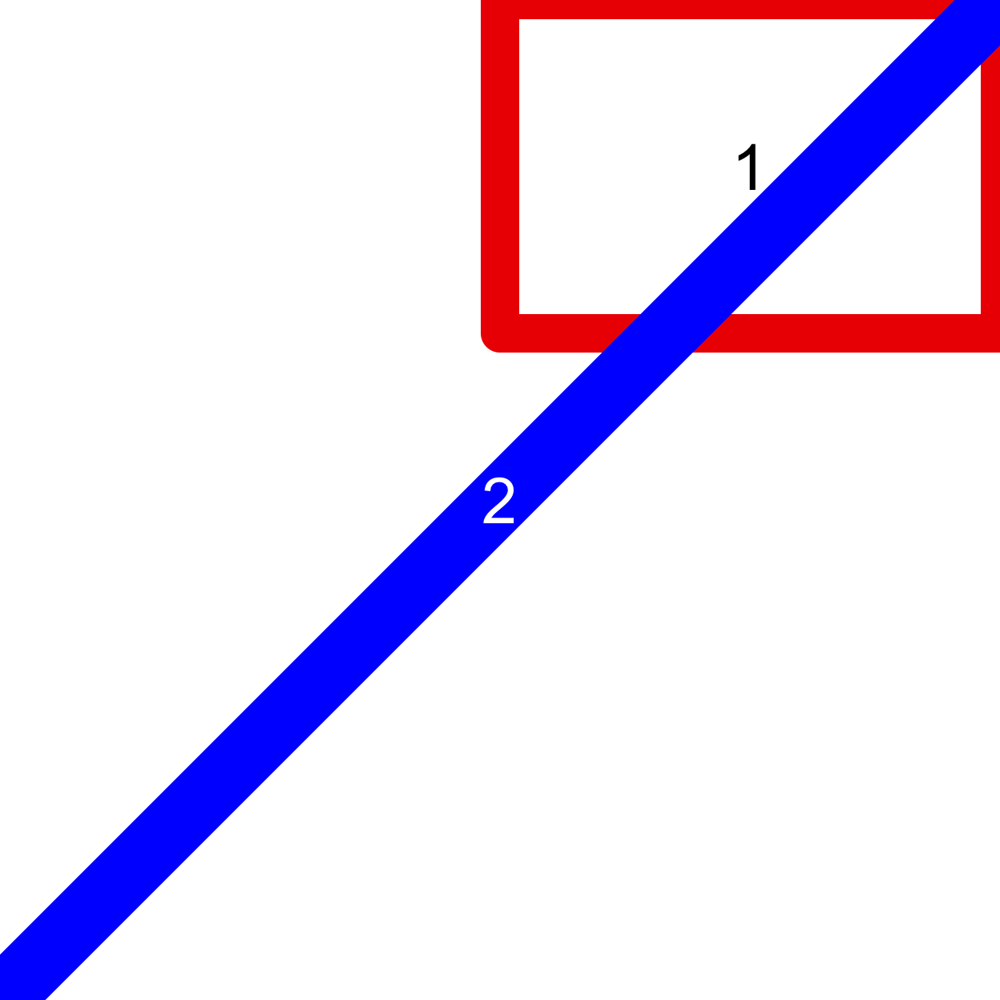
Notice how changing the numbers in the matrix specifies the order of the drawing. In the example above the white line drawn during the second plot draws over the red box drawn in the first. The third way to organize multiple plots is with the screen functions (?screen), but they are more complicated than layout and are rarely (if ever) necessary.
Coordinate systems
There are multiple coordinate systems used by the graphics system, listed in the table below.
| Name | Description |
|---|---|
| “user” | Most commonly used, the xy coordinates defined by the plotting region |
| “inches” | Cooridnates in inches with (0, 0) at bottom left of the device |
| “device” | Cooridnates in pixels or 1/72 inches with (0, 0) at top left of the device |
| “ndc” | Normalized device coordinates with (0, 0) at bottom left of the device |
| “nfc” | Normalized figure coordinates with (0, 0) at bottom left of the figure |
| “npc” | Normalized plot coordinates with (0, 0) at bottom left of the plot |
| “nic” | Normalized inner coordinates with (0, 0) at bottom left of the inner region |
We can convert x and y values between the different coordinate systems using the grconvertX and grconvertY functions, respectively. Note, for drawings with a single plotting region and no outer margins ‘ndc’, ‘nfc’ and ‘nic’ are identical. The following example comes from the R documentation for grconvertX:
plot(1:4)
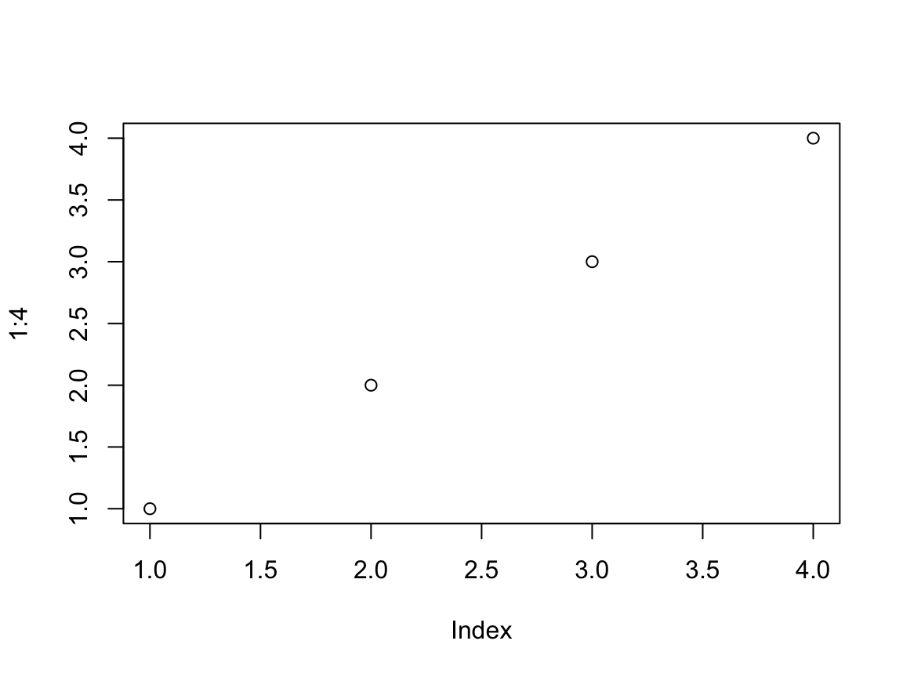
for(tp in c("inches", "device", "ndc", "nfc", "npc", "nic")) { newX <- grconvertX(c(1.0, 4.0), "user", tp) print(paste(tp, paste(round(newX, 3), collapse = ", "), sep = ": ")) } ## [1] "inches: 0.996, 5.404" ## [1] "device: 71.733, 389.067" ## [1] "ndc: 0.166, 0.901" ## [1] "nfc: 0.166, 0.901" ## [1] "npc: 0.037, 0.963" ## [1] "nic: 0.166, 0.901"
If we add another plotting region and outer margins the values change.
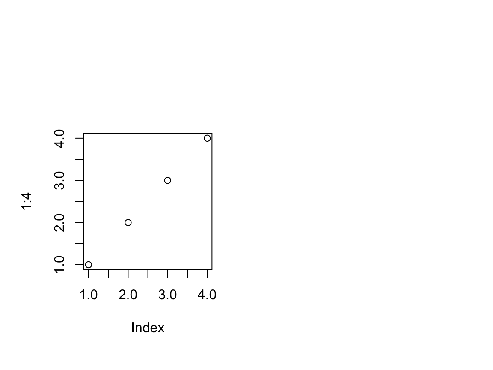
for(tp in c("inches", "device", "ndc", "nfc", "npc", "nic")) { newX <- grconvertX(c(1.0, 4.0), "user", tp) print(paste(tp, paste(round(newX, 3), collapse = ", "), sep = ": ")) } ## [1] "inches: 1.102, 3.144" ## [1] "device: 79.322, 226.378" ## [1] "ndc: 0.151, 0.431" ## [1] "nfc: 0.262, 0.854" ## [1] "npc: 0.037, 0.963" ## [1] "nic: 0.131, 0.427"
For the above plot, consider the locations of (0, 0) and (1, 1) is in each of the cooridnate systems.
par(oma = c(1, 1, 4, 1), mfrow = c(1, 2)) plot(1:4, ann = FALSE, axes = FALSE, type = "n") box(col = "gray40") box(which = "figure", col = "darkred") box(which = "inner", col = "darkblue") box(which = "outer", col = "darkgreen") for(tp in c("inches", "device", "ndc", "nfc", "npc", "nic")) { mcol <- switch(tp, `in` = "darkorange2", `dev` = "purple3", `ndc` = "darkgreen", `nfc` = "darkred", `npc` = "gray40", `nic` = "darkblue") points(x = grconvertX(0:1, tp, "user"), y = grconvertY(0:1, tp, "user"), col = mcol, cex = 2, xpd = NA, pch = 16, type = "o", lty = "dashed") }
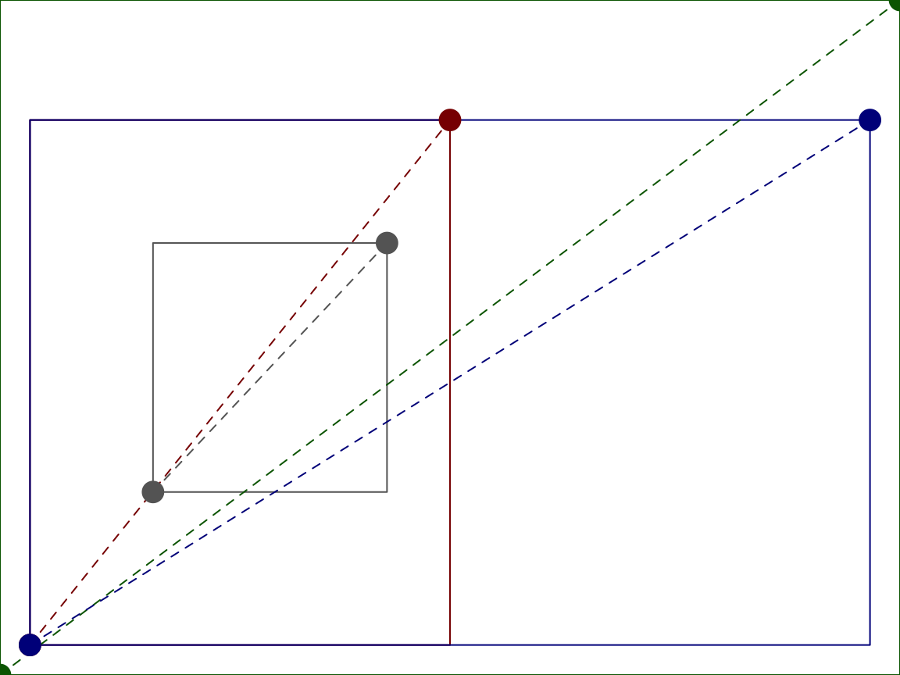
Consider the following example, where we determine the line location in user cooridnates. Recall, the size of the inner and outer margins are defined by the number of lines on each side of the plotting/figure regions, respectively. The number lines, here, refers to the number of lines of text that will fit. We can get the text height using the cin, cex, and lheight parameters stored in par. cin is a length two vector, defining the width and height ([width, height]) of a character in inches. cex provides the size multiplier. lheight defines the line height multiplier, or the spacing between lines of text. Therefore, we can get the height of a line (in inches) by multiplying the values:
We can then convert that line height to ‘npc’ units, and finally to ‘user’ units. (Note: using ‘user’ units becomes problematic if you have an axis on log scale because the ‘user’ coordinates are not linear.) The following function illustrates how:
line2user <- function(line, side) { lH <- par('cin')[2] * par('cex') * par('lheight') # Get the line height (in) # Converting to npc requires taking the difference between 0 and lh, because # 0 in inches does not equal 0 in npc xOff <- diff(grconvertX(c(0, lH), 'inches', 'npc')) # Convert to npc for x yOff <- diff(grconvertY(c(0, lH), 'inches', 'npc')) # Convert to npc for y switch(side, `1` = grconvertY(-line*yOff, 'npc', 'user'), `2` = grconvertX(-line*xOff, 'npc', 'user'), `3` = grconvertY(1 + line*yOff, 'npc', 'user'), `4` = grconvertX(1 + line*xOff, 'npc', 'user'), stop("Side must be 1, 2, 3, or 4", call.=FALSE)) }
Common plotting functions
Plots in R base plotting system are generated by calling successive R functions to “build” a plot. The graphics engine provides many convenience functions for common plots, enabling a simpler starting point for some graphs.
-
Histograms
A histogram displays the frequencies of data points occurring in defined ranges. Here is an example of a simple histogram made using the
histfunction.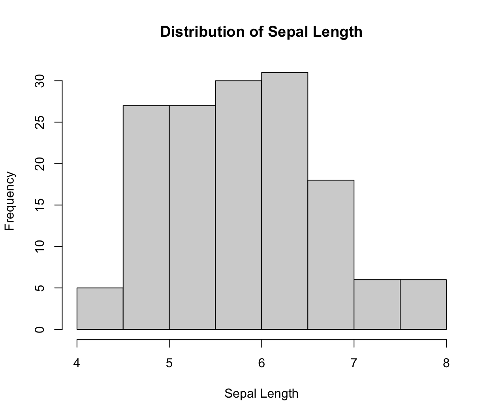
R automatically calculates the intervals to use in the plot, but there are many ways to set the breakpoints. You can specify the number of breaks using the
breaksargument. Here we look at the histograms with different numbers of breaks:data(iris) par(mfrow = c(2, 2)) hist(iris$Sepal.Length, breaks = 2) hist(iris$Sepal.Length, breaks = 10) hist(iris$Sepal.Length, breaks = 20, freq = FALSE) hist(iris$Sepal.Length, breaks = c(4, 4.5, 5, 7, 7.2, 7.6, 8), freq = TRUE) ## Warning in plot.histogram(r, freq = freq1, col = col, border = border, angle = ## angle, : the AREAS in the plot are wrong -- rather use 'freq = FALSE'
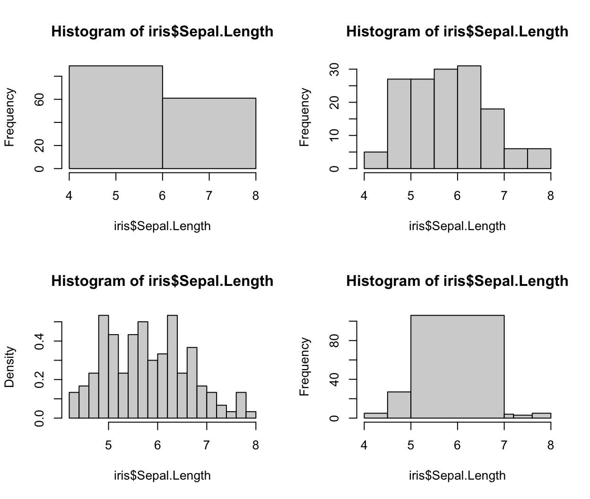
We see
breakscan also take a vector of user-specified breaks. In the case of uneven breaksfreqdefaults toFALSE, indicating to plot the density values (rather than frequency/count). This can be coerced back to count by settingfreq = TRUEin the function call. -
Barplot
A barplot is another common type of graphics and it plots the relationship between a numeric variable and a categorical variable. For example, sometimes we need to plot the count of each item as bar plots from a categorical dataset. You can use a base R function
barplotto make a barplot. The input data is a numeric vector, which gives the height of the bars.# count the number of species in the iris dataset using the table() function data(iris) table(iris$Species) ## ## setosa versicolor virginica ## 50 50 50 # reset the color palette palette("default") # plot this count data barplot(table(iris$Species), main = "Count of Species", col = c(1:3), xlab = "Species", ylab = "Count")
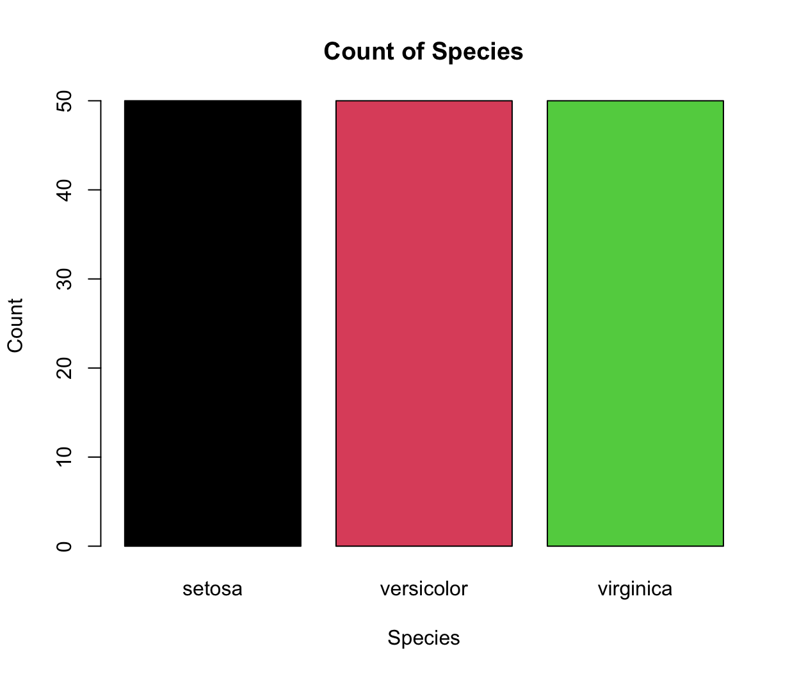
-
Boxplot
A boxplot provides a way of displaying the distribution of data based on the median, quartiles, minimum and maximum. You can make a boxplot using the
boxplotfunction, which takes its first argument as a formula. Here, the formula has a form ofy-axis ~ x-axis. We are plotting sepal length by species, and the right hand side of the~indicates the species variable.boxplot(iris$Sepal.Length ~ iris$Species, xlab = "Species", ylab = "Sepal Length")
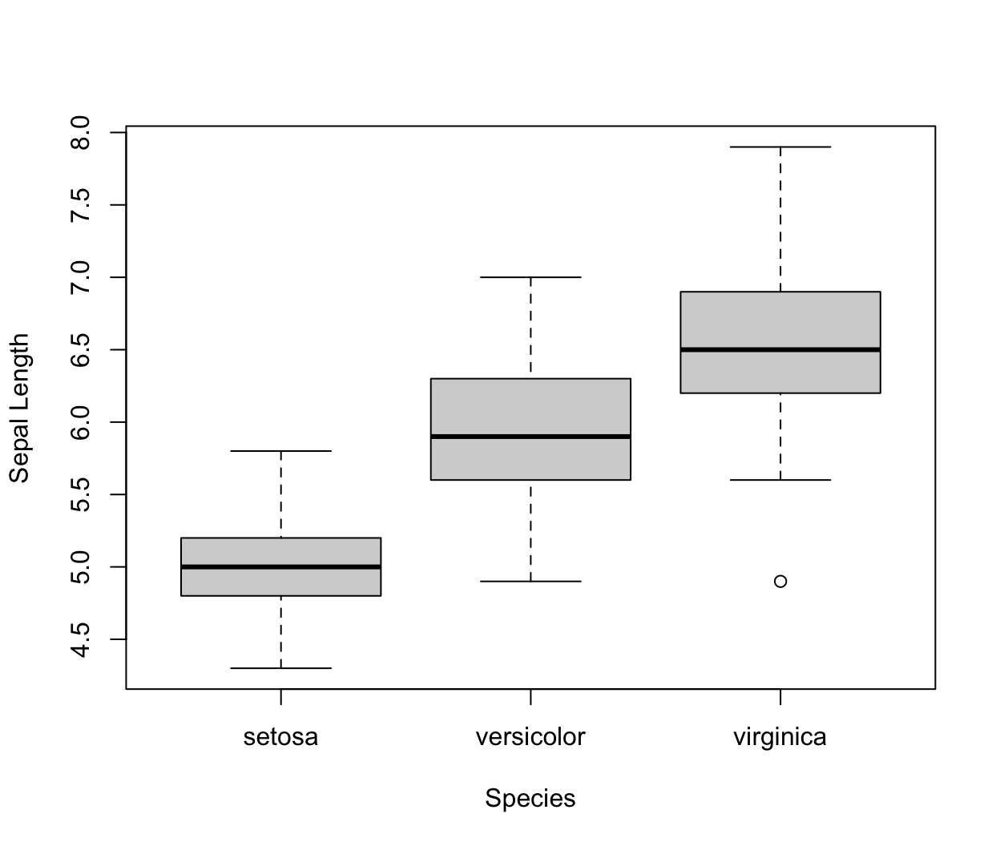
Each boxplot shows the median (the line inside the box), \(25^{th}\) and \(75^{th}\) percentiles of the data (the “box”), as well as +/- 1.5 times the interquartile range (IQR) of the data (the “whiskers”). Data points that are beyond 1.5 times the IQR of the data are represented separately by the circles.
-
Paired scatterplots
A scatterplot provides a way to visualize the relationship between two sets of numbers. In the ‘Iris’ dataset, we have four variables for observation: sepal length, sepal width, petal length, and petal width. We can look at the relationship between any of the four variables using
plot, or we can look at all pairs of relationships using thepairsfunction:pairs(iris, col = iris$Species)
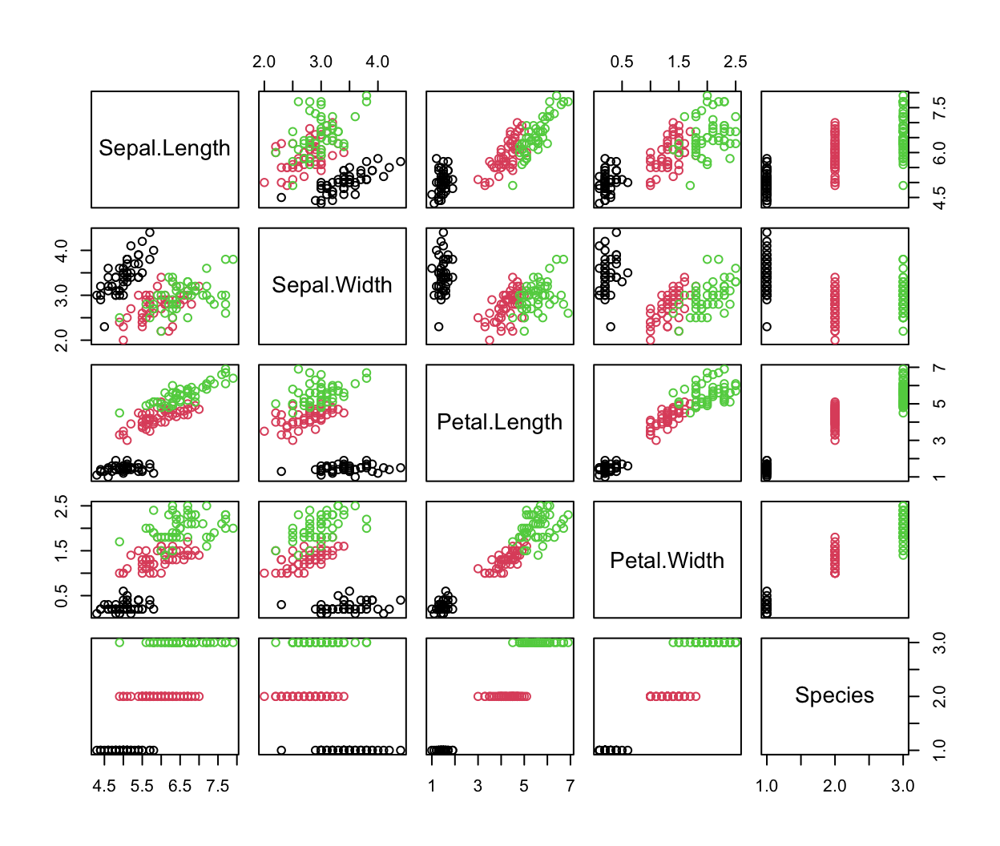
Exercises
-
Recreate the following graph of
AAPLbelow. (AAPLcan be loaded by runningdata(APPL)). The color used for shading is “dodgerblue”. Hint: theplotfunction will convert the dates to numeric. Take a look at?as.Dateand try runningas.numeric(AAPL$date). You can create the plot without explicilty using the “date” class.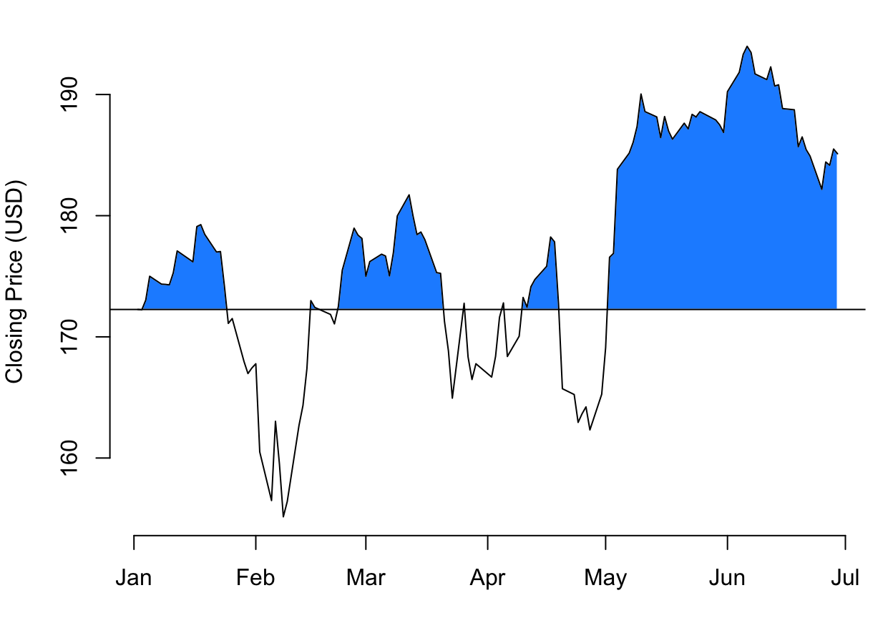
-
Create a ruler with your hand length (from bottom of palm to longest finger tip) in inches rounded to the nearest quarter inch. The ruler should be 2 inches tall, have an outer border, have dashes from inch down to sixteenth inch with the height of the dash corresponding to the unit (eg. the quater inch dashes should be 1/4" tall), have the inch marks labeled above the lines, and have your name (eg. “Dayne’s Ruler”) centered at 1.5" above the bottom of the ruler. See the example below.
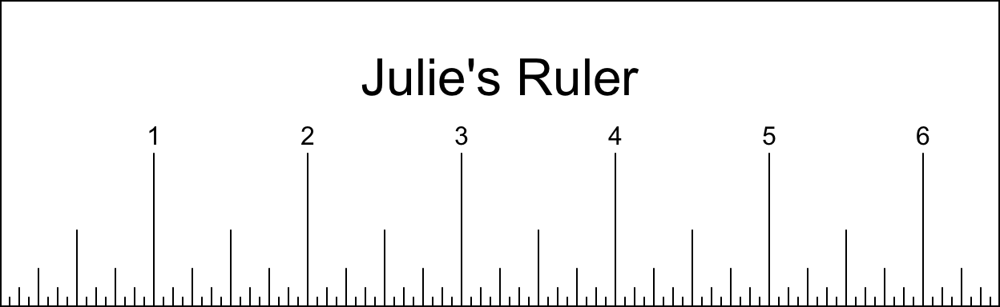
Challenge question: modify the
line2userfunction with anouterparameter such that the function will return the correct position of the outer lines (in user coordinates for the current plot) despite the number of plots in the device region. Hint: think about where the outer lines start relative to the different drawing regions.
Edward Tufte. The Visual Display of Quantitative Information and Envisioning Information, Graphics Press, PO Box 430, Cheshire, CT 06410.↩︎